I love Ruby: Scripting Feliz!

2. Agradecimientos

3. Presentación
- David Vargas Ruiz
- Ingeniero Informático por la ULPGC
- Profesor FP de Sistemas (IES Puerto de la Cruz).
- Ruby, software libre y StarWars.

4. El problema
Poco tiempo para impartir programación de Scripting
- Impartir el módulo de sistemas operativos en FP.
- Varias plataformas:
- GNU/Linux => Bash
- Windows => CMD, PowerShell
Programar scripts: Automatizar tareas, Sysadmin, Devops
- Los sysadmin/devops somos programadores… de scripts.
- Principal objetivo: Automatizar.
5. Alternativas
- No hacer nada: Coste cero.
- Ganar más tiempo: Quitar tiempo de otras unidades didácticas.
- Cambiar a un lenguaje de scripting mutiplataforma: ¿?
(2013) Visita a la central de OpenSUSE en Nürenberg
-
Lenguajes de scripting: Ruby, Python y Perl.
-
Herramientas: Brew, Yast, Vagrant, Metasploit, Rails(GitHub, Shopify), etc.
6. Definir scripting
Definición personal:
- Lenguaje interpretado.
- No se requiere IDE. Basta un editor texto plano.
- Script => Ejecutar comandos del sistema + estructuras de control.
- Comandos: Programas sin entorno gráfico.
SCRIPTING = comandos_del_sistema() + "algo que los una de forma lógica"
- Automatizar/facilitar tareas.
- Sólo mostrar mensajes cuando hay problemas.
- Códigos de salida:
0 = OK, 1 = Error
7. Instalación de Ruby
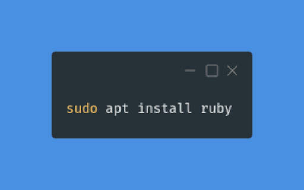
- MacOS y OpenSUSE ya lo tienen preinstalado.
8. Variables
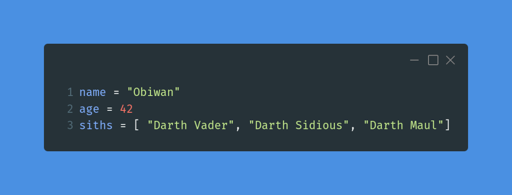
- Tipado fuerte y dinámico (igual que Bash).
- Lenguage interpretado (igual que Bash).
9. Estructuras condicional
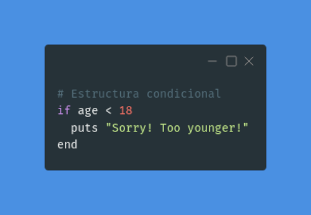
- Los paréntesis y el “then” son opcionales:
if (age < 18) then
puts "Sorry! Too younger!"
end
10. Filosofía de Ruby
[ Principio 1 ] Buscar la felicidad del programador!
- Ruby está orientado a “reducir” el tiempo del ser humano.
¿Esto es muy subjetivo?… ¿Cómo lo hacemos en realidad?
- Principio de menor sorpresa.
- Lenguaje, dinámico y flexible para dar libertad al programador.
- Ruby es simple por fuera, pero complejo por dentro.
- Importancia de parecerse al lenguaje natural.
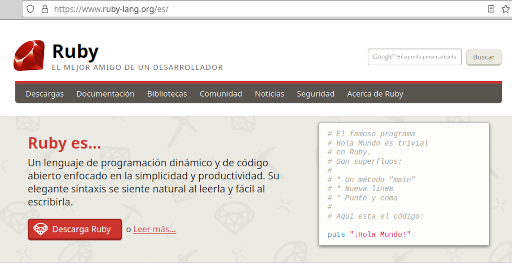
11. Los iteradores
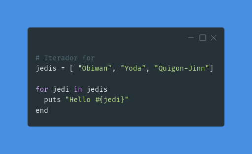
Bucle clásico:
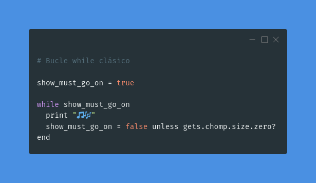
Hay muchas otras formas de hacer bucles e iterar...
12. Métodos y funciones:
Método
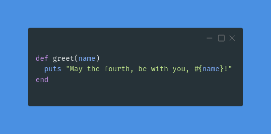
La función es un método que devuelve un objeto.
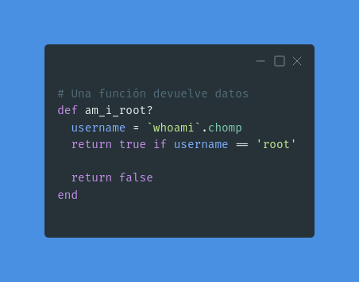
13. Ejecutar comandos
La instrucción system ejecuta un comando del sistema y devuelve true/false.
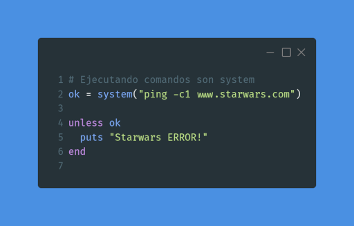
14. Ejecutar comandos para lectura
La instrucción %x() o “comillas inclinadas” sirve para:
- Ejecutar un comando del sistema y
- guardar la salida en una variable.
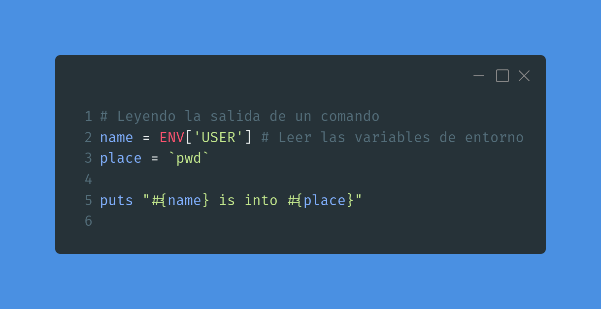
15. Entrada al script
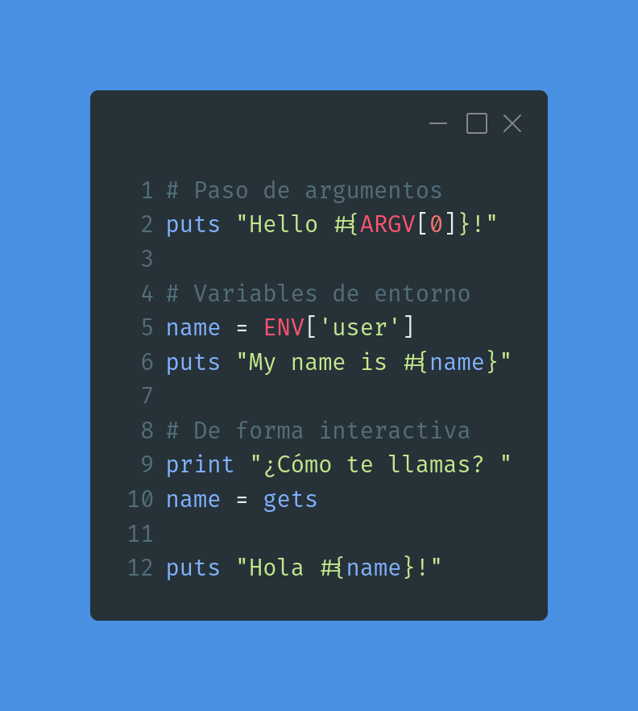
16. Ejemplo en Bash
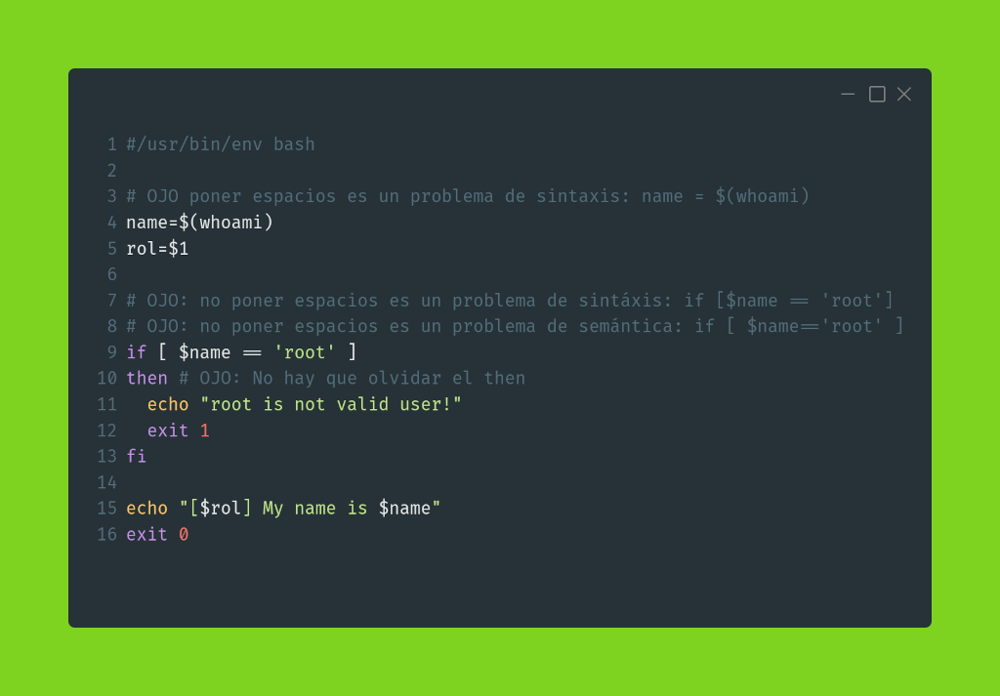
Ejemplo: whoami.sh
#/usr/bin/env bash
# OJO poner espacios es un problema de sintaxis: name = $(whoami)
name=$(whoami)
rol=$1
# OJO: no poner espacios es un problema de sintáxis: if [$name == 'root']
# OJO: no poner espacios es un problema de semántica: if [ $name=='root' ]
if [ $name == 'root' ]
then # OJO: No hay que olvidar el then
echo "root is not valid user!"
exit 1
fi
echo "[$rol] My name is $name"
exit 0
17. Ejemplo en Ruby
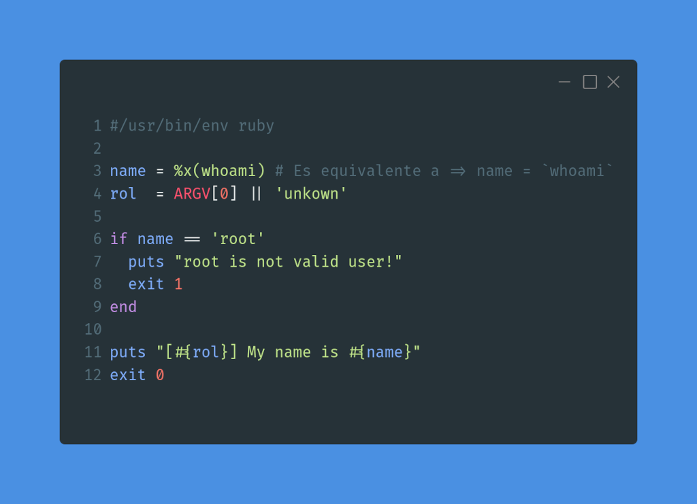
Ejemplo: whoami.rb
#/usr/bin/env ruby
name = %x(whoami) # Es equivalente a => name = `whoami`
rol = ARGV[0] || 'unkown'
if name == 'root'
puts "root is not valid user!"
exit 1
end
puts "[#{rol}] My name is #{name}"
exit 0
18. Resumen
- Ruby es ideal para aprender a programar.
- Transformación directa desde pseudocódigo.
- Transformación directa desde Bash.
- Se escribe casi como en inglés natural.
- Las empresas usan Ruby y Python como lenguages de scripting.
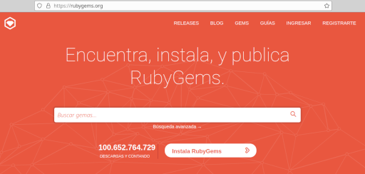
19. Fin
puts "Muchas gracias!" * 1000
- GitHub:
@dvarrui
- Email:
dvarrui@protonmail.com
- Presentación: https://github.com/dvarrui/proyectos-de-ejemplo/tree/master/charlas/ruby/scripting/slides